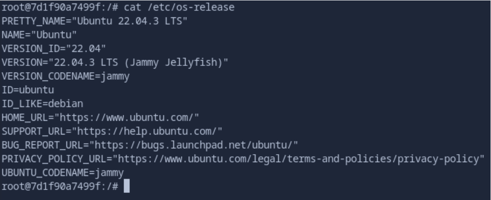
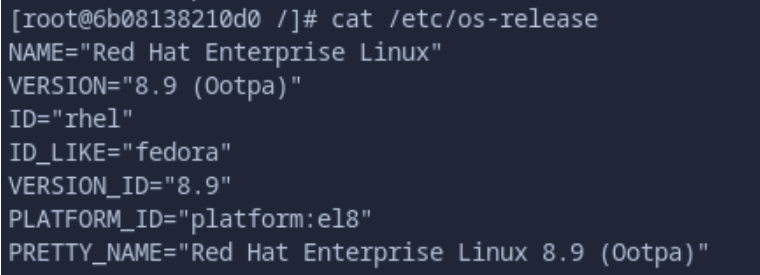
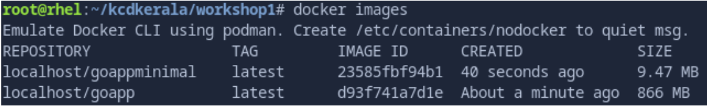
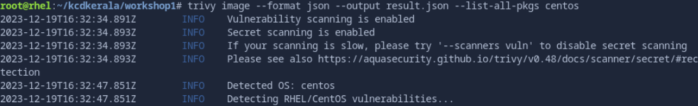
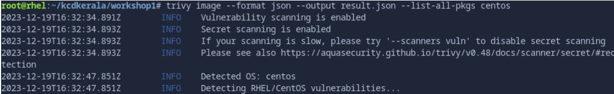

KCD Kerala 2024
Containers 101 Workshop Guide
Initial Setup
Please connect to red.ht/kcdkerala-workshop and start the environment.
Click at the bottom right corner ->
The environment will take 3-4 mins to spin up, so please be patient.
Once the environment is initialized, you can access the Linux terminal on the left side of the screen.
We will do the workshop steps in this terminal for 30-45 minutes.
Install the container tools package in your environment.
NOTE: Anything starting with # are commands to be executed in the Linux Server Terminal
First, let’s check what Operating System we are in and the kernel version.
# cat /etc/os-release
# uname -r
This is a Red Hat Enterprise Linux(RHEL) 9.3 server, codenamed “Plow” using kernel version 5.14
This will be our Container Host, where we will manage our containers and container images.
Let’s now install the “Container Tools” package.
# dnf install -y container-tools
Install the container tools package in your environment.
# podman pull ubuntu && podman pull ubi8
Let’s create a new container using the Ubuntu image.
# podman run --name ubuntu -it ubuntu /bin/bash
This command would instantiate the container from the image and get you the terminal prompt (-it option passed above) inside the container operating system.
Let’s check what operating system it is!
# cat /etc/os-release

This is Ubuntu 22.04 release, codenamed “jammy”. So the container is running a different operating system than what is running on the host operating system, which is RHEL9.3
Check the kernel version inside the container.
# uname -r
This is the kernel from the Host Operating System.
NOTE: Containers will piggyback into the host operating system kernel and its features.
Now let’s exit from the Ubuntu container and start a new container using the ubi8 image.
# podman run --name rhel -it ubi8 /bin/bash
Once inside the container, check the OS version.
# cat /etc/os-release

As you can see, the image has a RHEL8.9 Operating System.
Now you can exit from the container by running the “exit” command.
Security in Containers and Images
As you may know by now, a container is instantiated from a container image!
Image => Container.
So we must use container images that are certified by the vendor or when we build the container image, we follow the security best practices.
Let’s build a container image that uses Go to show a basic welcome message to the screen.
As a first step, clone https://github.com/sanujan/kcdkerala/ GitHub repository locally.
# cd
# git clone https://github.com/sanujan/kcdkerala/
Change to /root/kcdkerala/workshop1 directory and list the contents
# cd /root/kcdkerala/workshop1 && ls
Check the contents of the Dockerfile and the main.go Go file.
Let’s first build the Go application container image using the Dockerfile.
# docker build -t goapp -f Dockerfile
Now instantiate a container from this newly built image.
# docker run --name goapp localhost/goapp
The container is running as expected. But, let’s see the size of the image!
# docker images
The goapp image is around 866 MB in size, which is around ~30MB more than the golang image we pulled from DockerHub. The size of the image is quite big considering it’s a simple Go application showing a welcome message.
That’s where we can use “Multi-Stage” builds to reduce the footprint of the container images.
Let’s check the contents of the file Dockerfile-multi-stage-build
# cat /root/kcdkerala/workshop1/Dockerfile-multi-stage-build
Build the new image using the “multi-stage” container build method.
# docker build -t goappminimal -f Dockerfile-multi-stage-build
The first build is given a name called “firstbuild”, which we will reference later in the second build, when we use a different container image as base(parent) image.
Check the first “FROM” instruction in the Dockerfile-multi-stage-build file.
FROM docker.io/library/golang as firstbuild
The “as firstbuild” is a name given to this build using the golang container image from DockerHub.
Later in line 8, we reference the same build using “--from=firstbuild” as part of the COPY instruction.
COPY --from=firstbuild /kcdkerala/main .
Here, the second build which uses the alpine container image, will just copy the binary file of Go application “/kcdkerala/main” to second build’s WORKDIR “/root”
This way, we don’t need to use the HUGE golang container image or any dependencies or stale files left over from the first build. So the resulting Go application image will be quite smaller in size.
Check the image sizes using “docker images” command.
# docker images

The first goapp image is around 868 MB, while the second image built using “multi-stage” build goappminimal is only 9.47 MB. HUGE reduction in size!
Create a new container from this small image
# docker run --name goappminimal localhost/goappminimal
Kubernetes Community Days, Kerala!!
Container Image Scanning
Now that we have seen how to reduce the image footprint, let’s now check on scanning the images for any known vulnerabilities.
Trivy is an open source security scanner and it can scan container images.
Let’s first deploy Trivy in our container host (RHEL9 Server)
Configure the server to connect to the Trivy Yum repository
# wget http://people.redhat.com/sanujan/trivy.repo -O /etc/yum.repos.d/trivy.repo
Install Trivy
# yum -y install trivy
Pull the CentOS container image and run a scan using the “trivy” CLI.
# docker pull centos
# trivy image centos
NOTE: You may need to start podman systemd daemon to allow Trivy access to the podman API
# systemctl start podman
# trivy image –format json –output result.json –list-all-pkgs centos

